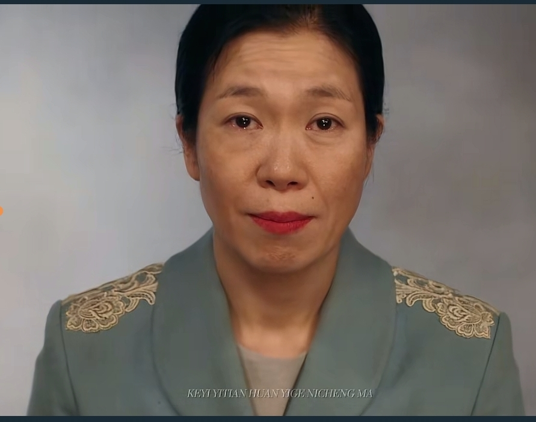
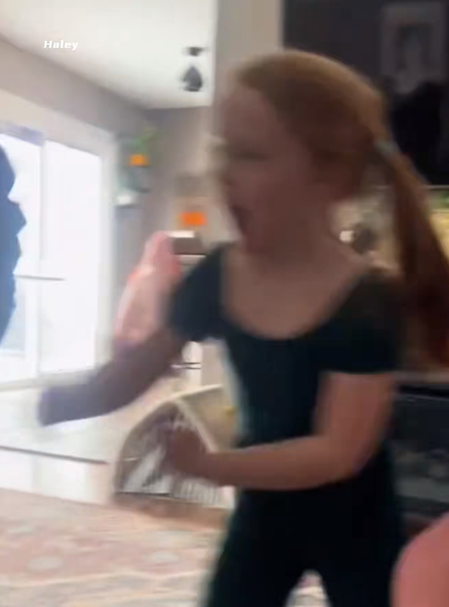
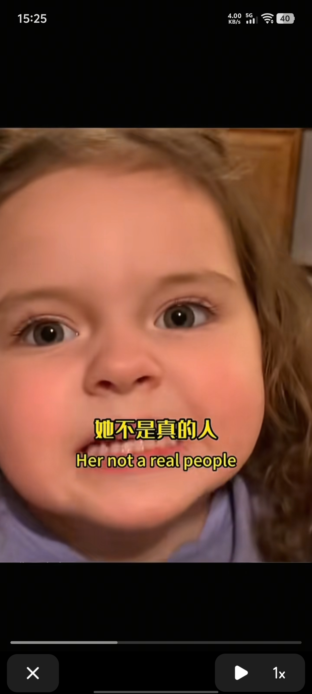
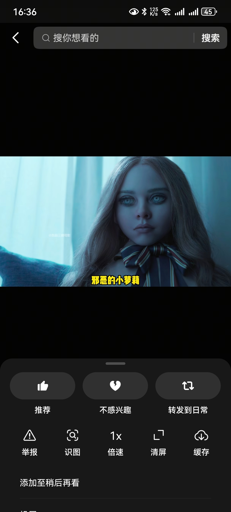
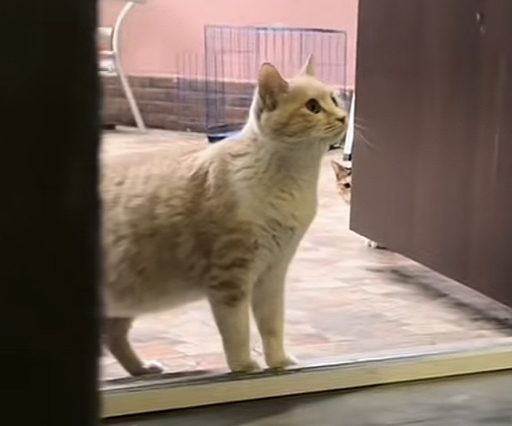
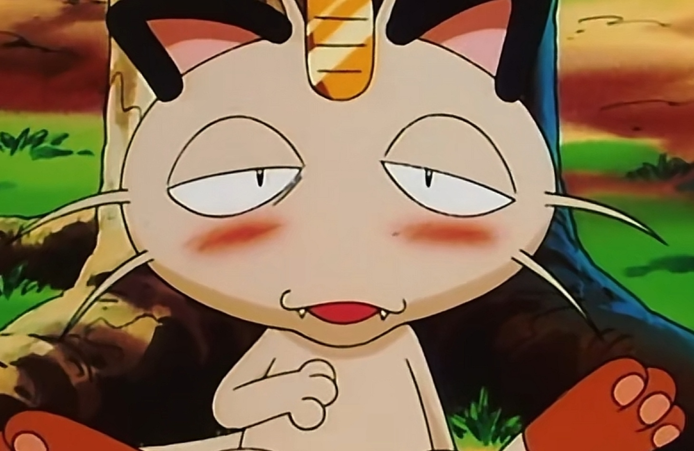
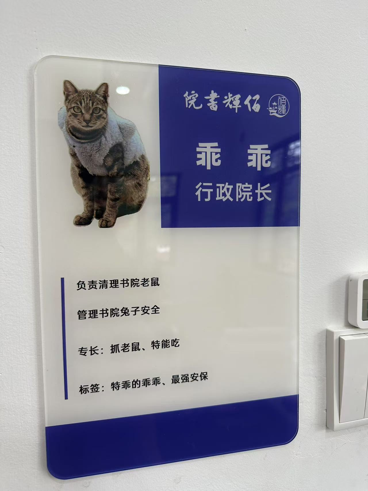
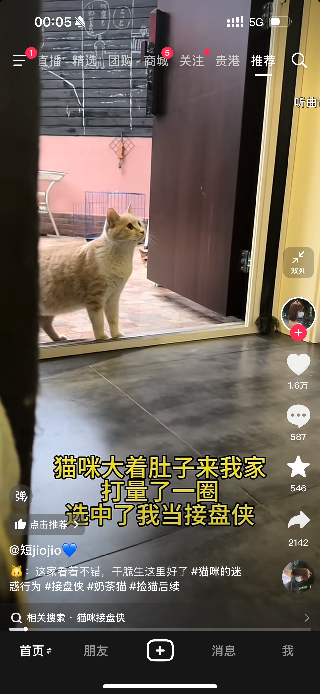
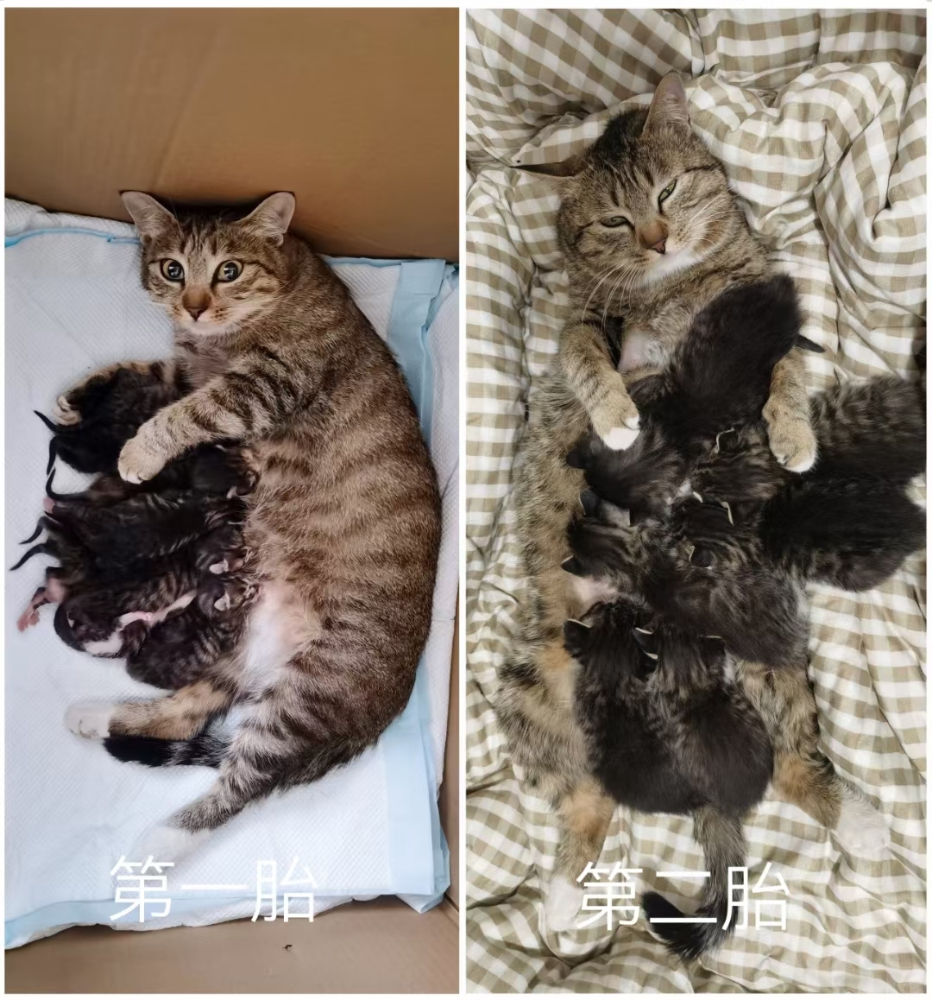
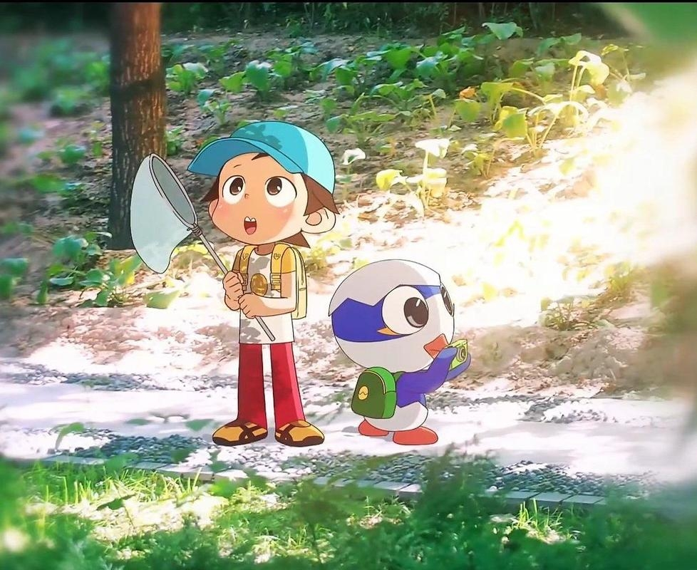

太辛苦了，奶完孩子还要奶队友[流泪]
孩子张嘴第一句话SSVGG[捂脸][OK]
国服不在的这两年正好给你生孩子了呗[听歌]
奶完孩子，奶队友[九转大肠]
宝宝：no 摩西
爱纯的妈妈明明只陪了爱纯的十年，却在爱纯往后六十年的日子一直不断出现[流泪]
“从今天起我吴爱纯的人生就是以后子女对我的记忆”[泣不成声][流泪][流泪]
优秀演员的演技实在是太能让人共情了就这一个眼中含泪的笑就让我眼泪刷就下来了[流泪][流泪][流泪] 
金明真的太像我们了，总是不耐烦的对待父母，但是下一秒就会愧疚，爸爸叫她起床，先是凶了爸爸，下一秒内心愧疚烦躁到依旧起床，伤害到妈妈的那一刻自己的心也碎掉了。
我一个人在澳洲读书的时候，有一次突然晕倒了，家里只有我一个人。慢慢的自己又醒了，看到妈妈打了好多好多电话，她说她心慌觉得我要出事了。[流泪]
看过好多国家的电视剧，不得不说韩国是最会拍细腻的感情戏的
怼英凡妈妈那一段完全共情 你可以骂我可以嫌弃我可以羞辱我 但是你要是说我妈妈 你儿子是朴宝剑我也不会嫁的 没有人能够取代妈妈在我心里的地位[流泪]
其实以前我是不知道父母与孩子是有感应的。直到去年抑郁症加重突然想不开了，站在顶楼，我妈突然冲上来，其实很突然，我也不知道她怎么知道我在顶楼，我问她，她说直觉，而且心很痛，知道我要出事了。再一次是在房间想不开，我爸出门去打麻将了，但就在我要解决自己的时候，他破门而入，我震惊的望着他，他说右眼皮一直跳，心里慌的不行，马上回来看看你。（现在已经在父母的爱意下重新恢复了因外界受得伤。）
他们给我那么多，我才送他们一点小东西，他们就满足了[流泪]哭死😭
宽植下线了！哭惨了，都不敢看下去了[流泪][流泪]，8 9岁开始就帮家里卖鱼，买船前在相亲男的船工作，被压榨。买船后不管中秋还是新年都一样出海，每天4点就起来出海，谁不想多睡会呢，一想到自己少睡一会孩子和他妈妈就能多睡会…尽管都这么拼了，搬家的时候看到另一半有些许不高兴还是下意识的觉得愧疚，没能给她更好的。对他而言他的全世界就在这个家里，他拼搏就为了守护这个家[流泪]可我感觉他累了一辈子
[流泪][流泪][流泪]太共情了，我前任因为我家境一般，提了分手，但在一起前再三让他考虑好，他说不介意。我家里觉得他人不错，知道我分手的消息后，家里人竟然是自责“如果我再年轻20岁，给我的宝拼一下，我的宝就不会受感情的苦了，可是爷爷已经70多了”。 明明他们把能给我的都给我了，从小我都比周围孩子过的优渥，这一刻我就知道，我和他不是一路人了，放下了。
为什么拍那么好，为什么半夜让我哭的睡不着[流泪][流泪][流泪]
我真的很金明好像啊。现在大四，面临的，计划的，未来的。每次给家里打电话，对待家里的态度。哇真的好像啊
自从有了AI，小作坊下料致死量
都说国乒的资源偏向莎莎，可莎莎是陪练出来的，而王曼昱是金牌教练，细心的教了她6年，一年没有主管教练，资源全给了王曼昱，国乒对不起莎莎，如果莎莎有金牌教练教她6年，结果肯定更历害，
明珠不该蒙尘，我要为她争一争！莎粉们列队！感谢杨指[抱抱你]
王鳗鱼参加两次亚青赛单打都没夺冠，莎莎亚青，世青，青奥都是单打冠军，是现在唯一三冠王。莎莎真的是天才小魔王[赞][赞][赞]
《在水中央》那个做榕树下的爷爷才最无敌[流泪]
糟糕😰！我仿佛到了爱听戏曲的年纪了[酷拽]
[捂脸]我外公以前唱戏的 都是演皇帝
外公也会唱戏，祖上是开戏班子，国共时期曾外祖父还是抗战戏团团长。只是外公很年轻就去世了，到舅舅这代就不唱了，戏服都成了小孩子的肚兜[流泪]
懂事的男人已经自己怀孕了[看][看][看]
我还以为你把活的泡水里了呢，竟然在动
流在水里的就是一堆虫了是吗[黑脸]
紫色！紫色！紫色！紫！！！色！噢！！
你說橘色跟藍色會不會營造出一種，日落海面
[我想静静]王蓉你造了什么孽啊？开局就让你遇上陈德容[流泪]
姜登选在奉军中威信很高。
日本人：我想要太阳 张作霖：行 日本人：我想要月亮 张作霖：行 日本人：我去你家吃口饭 张作霖：不行 我家穷的都快揭不开锅了
奉系五虎将之一姜登选文武双全，儒雅帅气，真是可惜了，主要是姜到死都没有防备郭，一心带着劝说和好的想法孤身去的，没想到被残忍将他杀害，就此一条郭不会有好下场的……
对这个角度的执念是背后有什么高人指点吗
王靖雯你对这个运镜有什么执念吗[愉快]
为什么贵，不就是亚狮龙的功劳吗[憨笑]
忘了亚狮龙屯毛片的事儿啦？涨价谁引起的？忘啦？？？
小女孩：我滴孩啊 
好笑吗？我只看到了一位绝望的母亲
小孩晚上：美式教育你赢了
治挺好啊，人都要坐起来了[赞]
我侄女跟我说她的玩具感冒了 要去医院 我把他玩具头拆下来跟她说 好了 死了 不用治了 然后她哭了一个钟[笑哭]
应该让这小女孩教教她 
为什么他们每一句话我都能听懂，难道是因为看了字幕的原因吗？
等下化身：邪恶的小萝莉 
你惊动了witch
为什么她这么小，英语这么好[绝望的凝视][绝望的凝视][绝望的凝视]
得逞的老登:
医生老爸在此次治疗中得了mvp
@收到收到 你看小孩姐 高兴的都蹦起来了[微笑][微笑][微笑]
以前和二宝平追的 现在放他打6 你看他敢不敢上 完全废了
冷知识：BGM她自己配的[流泪]
原来这就是月子中心 
建议大家不要拍小猫了！！！会有人收集小猫的面部信息，然后偷小猫银行卡里的钱！！！
进来前:哇，这是你家吗？ 进来后:这是你家嘛！？
它是你配音的？ 
你说是这猫唱的我都信
我在小区遇到一只肚子很大的三花，地上打滚，我心想快生了，赶紧弄了一个窝。结果一会人主人来了，说单纯是胖的[流泪]早就绝育了[流泪]
为了看这只咪咪愣是皱着眉忍受着bgm[流泪]
跑家里吃完饭不肯走了，最后带回书院当院长去了，乖的不行[看] 
门后面还有一只在悄咪咪 
第一胎死赖着在我家生的，没想过养猫半散养着，直到怀了第二胎意识到这样下去不行，正式收养它给它做了绝育 
歌名：原来你也在这里不谢[看]
亲猫体质真好，猫咪都是自动上门的
我知道！春泥！春泥！
我和你飞到蓝蓝的天边~
讲真，神奇啊U的片尾在当时真的给我的心灵带来极大的震撼，小时候一直坚信他们是真实存在的[憨笑][憨笑][憨笑] 
有一种作业没写完要完蛋的感觉[憨笑]
一吻便颠倒众生
Read more: